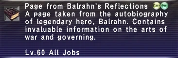

Level 75 reference · Zenith rules


StatisticsPage from Balrahn's Reflections Lv. 60 All Jobs
|
Other UsesUsed in Quests: None
|
How to Obtain
Einherjar
Notes:
- The inventory name for this item is "Hero's Reflections", however it appears in the log and on the image titled as "Page from Balrahn's Reflections".
Adapted from Eden Wiki: Hero's Reflections · Contributors and history · CC BY-SA 4.0. Revision 45099. Layout, links and optional background text adapted for Zenith.